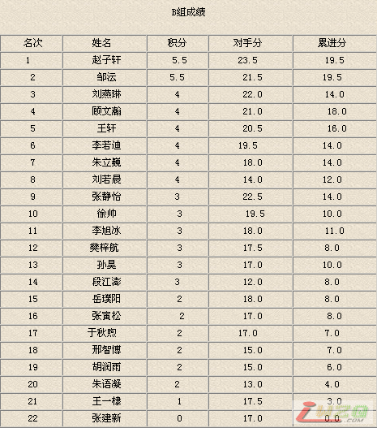
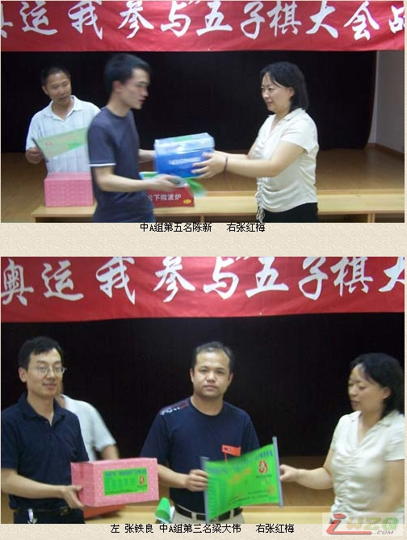

北京七月十四日大会战，奖品过万
#1 北京七月十四日大会战，奖品过万 作者：有志青年 发表时间：2007-7-11 15:54:39
快讯：永安保险公司北京分公司将为七月十四日“绿色奥运我参与”五子棋大会战，提供价值上万元奖品。七月十四日早八点三十分，比赛分两个组A（非小学生）、B（小学生包括学龄前）分别争夺高价值奖品。
赛址：东城海运仓小区南颂年三号楼，四楼
赛场附近交通
地铁2号线
环行：积水潭 - 鼓楼大街 - 安定门 - 雍和宫 - 东直门 - 东四十条 - 朝阳门 - 建国门 - 北京站 - 崇文门 - 前门 - 和平门 - 宣武门 - 长椿街 - 复兴门 - 阜成门 - 车公庄 - 西直门 - 积水潭(共19站
113路
大北窑南 - 大北窑北 - 光华桥南 - 呼家楼北 - 白家庄 - 长虹桥西 - 三里屯 - 工人体育场 - 工人体育馆 - 东四十条桥东 - 东四十条桥西 - 东四十条 - 张自忠路 - 宽街路口东 - 北兵马司 - 交道口南 - 安定门内 - 地坛西门 - 蒋宅口 - 外馆斜街 - 安华西里 - 安华桥南 - 中国科技馆东门 - 安贞西里 - 北土城西路东口 - 华严西里 - 民族园路(共27站)
115电车
东黄城根北口 - 宽街路口东 - 张自忠路 - 东四十条 - 东四十条桥西 - 东四十条桥东 - 工人体育馆 - 工人体育场 - 三里屯 - 长虹桥西 - 团结湖路北口 - 团结湖公园 - 水碓路口南 - 小庄路口北 - 红庙路口西 - 英家坟 - 慈云寺 - 东八里庄 - 十里堡 - 甘露园小区 - 青年路南口 - 康家沟(共22站)
118电车
上行：紫竹院南门 - 白石桥南 - 四道口东 - 二里沟西口 - 郝家湾 - 二里沟东口 - 三塔寺 - 车公庄东 - 平安医院 - 平安里路口东 - 厂桥路口东 - 东官房 - 北海北门 - 地安门东 - 锣鼓巷 - 宽街路口东 - 张自忠路 - 东四十条 - 东四十条桥西 - 东四十条桥东 - 工人体育馆 - 工人体育场 - 朝阳医院 - 东大桥路口北 - 东大桥路口东 - 关东店 - 呼家楼西 - 小庄路口东 - 红庙路口西 - 红庙路口东(共30站)
下行：红庙路口西 - 小庄路口东 - 呼家楼西 - 关东店 - 东大桥路口北 - 朝阳医院 - 工人体育场 - 工人体育馆 - 东四十条桥东 - 东四十条桥西 - 东四十条 - 张自忠路 - 宽街路口东 - 锣鼓巷 - 地安门东 - 北海北门 - 东官房 - 厂桥路口东 - 平安里路口西 - 平安医院 - 官园 - 车公庄西 - 三塔寺 - 二里沟东口 - 郝家湾 - 二里沟西口 - 四道口东 - 外文印刷厂 - 老虎庙 - 花园桥北 - 紫竹桥南 - 紫竹院南门(共32站)
701路
上行：岳各庄红星美凯龙 - 梅市口路 - 青塔蔚园 - 新园村 - 北太平路口 - 永定路口南 - 永定路口北[武警总医院] - 铁家坟南 - 铁家坟北 - 阜永路口南 - 定慧桥东 - 定慧寺东 - 西钓鱼台 - 航天桥西 - 航天桥北 - 花园桥南 - 花园桥东 - 老虎庙 - 外文印刷厂 - 四道口东 - 二里沟西口 - 郝家湾 - 二里沟东口 - 三塔寺 - 车公庄东 - 平安医院 - 平安里路口西 - 厂桥路口东 - 北海北门 - 地安门东 - 锣鼓巷 - 宽街路口东 - 张自忠路 - 东四十条 - 东四十条桥西 - 东四十条桥东 - 工人体育场 - 三里屯 - 农业展览馆 - 亮马桥 - 燕莎桥南 - 燕莎桥东 - 安家楼 - 东风桥东 - 酒仙桥商场 - 酒仙桥 - 将台路口西 - 高家园 - 丽都饭店 - 望京医院 - 花家地北里 - 大西洋新城南门(共52站)
下行：大西洋新城南门 - 花家地北里西站 - 花家地北里 - 望京医院 - 丽都饭店 - 高家园 - 将台路口西 - 酒仙桥 - 酒仙桥商场 - 东风桥东 - 安家楼 - 燕莎桥东 - 燕莎桥南 - 亮马桥 - 农业展览馆 - 三里屯 - 工人体育场 - 东四十条桥东 - 东四十条桥西 - 东四十条 - 张自忠路 - 宽街路口东 - 锣鼓巷 - 地安门东 - 北海北门 - 厂桥路口东 - 平安里路口西 - 平安医院 - 车公庄西 - 三塔寺 - 二里沟东口 - 郝家湾 - 二里沟西口 - 四道口东 - 外文印刷厂 - 老虎庙 - 花园桥南 - 航天桥北 - 航天桥西 - 西钓鱼台 - 定慧寺东 - 阜永路口南 - 铁家坟北 - 铁家坟南 - 永定路口北[武警总医院] - 永定路口南 - 北太平路口 - 新园村 - 青塔蔚园 - 梅市口路 - 岳各庄红星美凯龙(共51站)
758路
上行：天通北苑 - 天通苑东三区北站 - 天通苑东三区 - 天通苑东二区 - 天通苑东区小学 - 天通苑环岛 - 天通苑环岛北站 - 白坊 - 天
#2 Re:北京七月十四日大会战，奖品过万 作者：黄药师 发表时间：2007-7-11 17:20:45
5555555555555太远了～～～～～#3 Re:北京七月十四日大会战，奖品过万 作者：青蛙王子 发表时间：2007-7-12 8:21:38
靠,哈尔滨的也去不了
#4 北京七月十四日大会战，成绩公布 作者：有志青年 发表时间：2007-7-15 22:17:21
“永安财产”杯“绿色奥运我参与”五子棋大会战昨晚七点成绩揭晓，A组七轮苦战 曹冬、李鹏、 梁大伟、霍九旭、陈新分获前五名，B组热战六轮 赵子轩、邹云、刘燕琳、顾文瀚、王轩分获前五名。光明小学、和平里三小获优秀组织奖。
这次比赛由于与“绿色奥运我参与”为主题，受到了五子棋爱好者的积极响应，比赛前人数大增达六十八人，组委会措手不及，使比赛推迟了一个小时进行。参与者争先恐后的在五子棋爱好者环保公约上签名，并参加了由平安人寿保险北京分公司恒久部，推出的奥运及健康知识有奖争答。
赛中永安财产保险公司北京分公司的领导陈勇等三人也兴致勃勃的观看了比赛，永安财产保险公司北京分公司为比赛提供了做工精细的白玉及琉璃工艺摆件。
河南籍女棋手霍九旭，一路过关斩将，杀进前五让人刮目。
河北石家庄的陈新为了参加比赛凌晨二点多就登上了来京的火车，马不停蹄投入比赛，并取得了第五名的好成绩。江苏徐州的奚振扬从回龙观夏令营营址,打车早七点就到了赛场，第一次参加正式比赛就取得了第十二名的好成绩。
京系连珠珠棋社的网友们，热情大胆的从虚拟中走出，互称“雅号”直面手谈，大家乐不思“蜀”。
著名棋手仇云飞午后也从天津学校返家一下火车，就直来助战。
还在高考待分中煎熬的王梓及好友李想两父子也到场观战。
棋手们一致反应，这样的比赛希望多搞，有现实高手，有网络高手，有“疯狂”爱好者，有初识五子者，…大家欢乐一堂，切磋连珠，多多益善。

